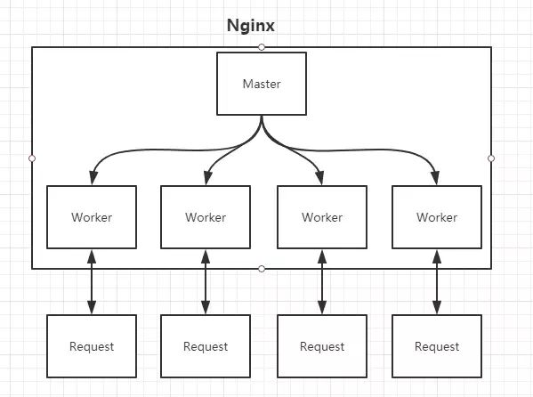

1.正向代理和反向代理
正向代理隐藏了真实请求的客户端，服务端不知道真实的客户端是谁。比如我们可以通过VPN绕过GFW来访问被墙的网站。
反向代理隐藏了真实的服务端，反向代理服务器将客户端的请转发到真实请求的服务器上。比如访问www.baidu.com时候，可以通过nginx反向代理服务器将客户端的请求转发到真实带有数据的服务器上。

2.反向代理实现
一个负载均衡设备分发客户端请求，将客户端请求转发到空闲服务器
服务器将客户端请求的数据返回到负载均衡设备
负载均衡将服务器返回的数据返回给客户端
客户端和负载均衡设备直接通信，用户做服务器域名解析时，解析到的ip时负载均衡设备的ip，而不是服务器的ip。3.nginx反向代理
3.1nginx的Master-Worker模式
nginx启动后，其实就是在80端口启动了Socket服务进行监听，nginx涉及Master和Worker进程。
Master进程读取并验证配置文件nginx.conf;管理worker进程。
每个Worker进程都维护一个线程，处理连接和请求；Worker进程的个数由配置文件
worker_process配置项来决定，一般和CPU个数相关。
3.2nginx的configuration文件
nginx.conf文件结构：
… #全局块events { #events块
…
}http #http块
{... #http全局块 server #server块 { ... #server全局块 location [PATTERN] #location块 { ... } location [PATTERN] { ... } } server { ... } ... #http全局块}
全局块：配置影响nginx全局的指令。一般有运行nginx服务器的用户组，nginx进程pid存放路径，日志存放路径，配置文件引入，允许生成worker process数等。
events块：配置影响nginx服务器或与用户的网络连接。有每个进程的最大连接数，选取哪种事件驱动模型处理连接请求，是否允许同时接受多个网路连接，开启多个网络连接序列化等。
http块：可以嵌套多个server，配置代理，缓存，日志定义等绝大多数功能和第三方模块的配置。如文件引入，mime-type定义，日志自定义，是否使用sendfile传输文件，连接超时时间，单连接请求数等。
配置虚拟主机的相关参数，一个http中可以有多个server。
配置请求的路由，以及各种页面的处理情况。
1
2
3
4
5
6
7
8
9
10
11
12
13
14
15
16
17
18
19
20
21
22
23
24
25
26
27
28
29
30
31
32
33
34
35
36
37
38
39
40
41
42
43
44
45
46
47
48
49
50
51
52
53
54
55
56
57
58
59
60
61
62
63
64
65
66
67
68
69
70
71
72
73
74
75
76
77
78
79
80
81
82
83
84
85
86
87
88
89
90
91
92
93
94
95
96
97
98
99
100
101
102
103
104
105
106
107
108
109
110
111
112
113
114
115
116
117
118
119
120
121
122
123
124
125
126
127
128
129
130
131
132
133
134
135
136
137
138
139
140
141
142
143
144
145
146
147
148
149
150
151
152
153
154
155
156
157
158
159
160
161
162
163
164
165
166
167
168
169
170
171
172
173
174
175
176
177
178
179
180
181
182
183
184
185
186
187
188
189
190
191
192
193#定义 nginx 运行的用户和用户组
user www www;
#nginx 进程数，建议设置为等于 CPU 总核心数。
worker_processes 8;
#nginx 默认没有开启利用多核 CPU, 通过增加 worker_cpu_affinity 配置参数来充分利用多核 CPU 以下是 8 核的配置参数
worker_cpu_affinity 00000001 00000010 00000100 00001000 00010000 00100000 01000000 10000000;
#全局错误日志定义类型，[ debug | info | notice | warn | error | crit ]
error_log /var/log/nginx/error.log info;
#进程文件
pid /var/run/nginx.pid;
#一个 nginx 进程打开的最多文件描述符数目，理论值应该是最多打开文件数（系统的值 ulimit -n）与 nginx 进程数相除，但是 nginx 分配请求并不均匀，所以建议与 ulimit -n 的值保持一致。
worker_rlimit_nofile 65535;
#工作模式与连接数上限
events
{
#参考事件模型，use [ kqueue | rtsig | epoll | /dev/poll | select | poll ]; epoll 模型是 Linux 2.6 以上版本内核中的高性能网络 I/O 模型，如果跑在 FreeBSD 上面，就用 kqueue 模型。
#epoll 是多路复用 IO(I/O Multiplexing) 中的一种方式，但是仅用于 linux2.6 以上内核，可以大大提高 nginx 的性能
use epoll;
############################################################################
#单个后台 worker process 进程的最大并发链接数
#事件模块指令，定义 nginx 每个进程最大连接数，默认 1024。最大客户连接数由 worker_processes 和 worker_connections 决定
#即 max_client=worker_processes*worker_connections, 在作为反向代理时：max_client=worker_processes*worker_connections / 4
worker_connections 65535;
############################################################################
}
#设定 http 服务器
http {
include mime.types; #文件扩展名与文件类型映射表
default_type application/octet-stream; #默认文件类型
#charset utf-8; #默认编码
server_names_hash_bucket_size 128; #服务器名字的 hash 表大小
client_header_buffer_size 32k; #上传文件大小限制
large_client_header_buffers 4 64k; #设定请求缓
client_max_body_size 8m; #设定请求缓
sendfile on; #开启高效文件传输模式，sendfile 指令指定 nginx 是否调用 sendfile 函数来输出文件，对于普通应用设为 on，如果用来进行下载等应用磁盘 IO 重负载应用，可设置为 off，以平衡磁盘与网络 I/O 处理速度，降低系统的负载。注意：如果图片显示不正常把这个改成 off。
autoindex on; #开启目录列表访问，合适下载服务器，默认关闭。
tcp_nopush on; #防止网络阻塞
tcp_nodelay on; #防止网络阻塞
##连接客户端超时时间各种参数设置##
keepalive_timeout 120; #单位是秒，客户端连接时时间，超时之后服务器端自动关闭该连接 如果 nginx 守护进程在这个等待的时间里，一直没有收到浏览发过来 http 请求，则关闭这个 http 连接
client_header_timeout 10; #客户端请求头的超时时间
client_body_timeout 10; #客户端请求主体超时时间
reset_timedout_connection on; #告诉 nginx 关闭不响应的客户端连接。这将会释放那个客户端所占有的内存空间
send_timeout 10; #客户端响应超时时间，在两次客户端读取操作之间。如果在这段时间内，客户端没有读取任何数据，nginx 就会关闭连接b
################################
#FastCGI 相关参数是为了改善网站的性能：减少资源占用，提高访问速度。下面参数看字面意思都能理解。
fastcgi_connect_timeout 300;
fastcgi_send_timeout 300;
fastcgi_read_timeout 300;
fastcgi_buffer_size 64k;
fastcgi_buffers 4 64k;
fastcgi_busy_buffers_size 128k;
fastcgi_temp_file_write_size 128k;
###作为代理缓存服务器设置#######
###先写到 temp 再移动到 cache
#proxy_cache_path /var/tmp/nginx/proxy_cache levels=1:2 keys_zone=cache_one:512m inactive=10m max_size=64m;
###以上 proxy_temp 和 proxy_cache 需要在同一个分区中
###levels=1:2 表示缓存级别，表示缓存目录的第一级目录是 1 个字符，第二级目录是 2 个字符 keys_zone=cache_one:128m 缓存空间起名为 cache_one 大小为 512m
###max_size=64m 表示单个文件超过 128m 就不缓存了 inactive=10m 表示缓存的数据，10 分钟内没有被访问过就删除
#########end####################
#####对传输文件压缩###########
#gzip 模块设置
gzip on; #开启 gzip 压缩输出
gzip_min_length 1k; #最小压缩文件大小
gzip_buffers 4 16k; #压缩缓冲区
gzip_http_version 1.0; #压缩版本（默认 1.1，前端如果是 squid2.5 请使用 1.0）
gzip_comp_level 2; #压缩等级，gzip 压缩比，1 为最小，处理最快；9 为压缩比最大，处理最慢，传输速度最快，也最消耗 CPU；
gzip_types text/plain application/x-javascript text/css application/xml;
#压缩类型，默认就已经包含 text/html，所以下面就不用再写了，写上去也不会有问题，但是会有一个 warn。
gzip_vary on;
##############################
#limit_zone crawler $binary_remote_addr 10m; #开启限制 IP 连接数的时候需要使用
upstream blog.ha97.com {
#upstream 的负载均衡，weight 是权重，可以根据机器配置定义权重。weigth 参数表示权值，权值越高被分配到的几率越大。
server 192.168.80.121:80 weight=3;
server 192.168.80.122:80 weight=2;
server 192.168.80.123:80 weight=3;
}
#虚拟主机的配置
server {
#监听端口
listen 80;
#############https##################
#listen 443 ssl;
#ssl_certificate /opt/https/xxxxxx.crt;
#ssl_certificate_key /opt/https/xxxxxx.key;
#ssl_protocols SSLv3 TLSv1;
#ssl_ciphers HIGH:!ADH:!EXPORT57:RC4+RSA:+MEDIUM;
#ssl_prefer_server_ciphers on;
#ssl_session_cache shared:SSL:2m;
#ssl_session_timeout 5m;
####################################end
#域名可以有多个，用空格隔开
server_name www.ha97.com ha97.com;
index index.html index.htm index.php;
root /data/www/ha97;
location ~ .*.(php|php5)?$ {
fastcgi_pass 127.0.0.1:9000;
fastcgi_index index.php;
include fastcgi.conf;
}
#图片缓存时间设置
location ~ .*.(gif|jpg|jpeg|png|bmp|swf)$ {
expires 10d;
}
#JS 和 CSS 缓存时间设置
location ~ .*.(js|css)?$ {
expires 1h;
}
#日志格式设定
log_format access '$remote_addr - $remote_user [$time_local] "$request" ' '$status $body_bytes_sent "$http_referer" ' '"$http_user_agent" $http_x_forwarded_for';
#定义本虚拟主机的访问日志
access_log /var/log/nginx/ha97access.log access;
#对 "/" 启用反向代理
location / {
proxy_pass http://127.0.0.1:88;
proxy_redirect off;
proxy_set_header X-Real-IP $remote_addr;
#后端的 Web 服务器可以通过 X-Forwarded-For 获取用户真实 IP
proxy_set_header X-Forwarded-For $proxy_add_x_forwarded_for;
#以下是一些反向代理的配置，可选。
proxy_set_header Host $host;
client_max_body_size 10m; #允许客户端请求的最大单文件字节数
client_body_buffer_size 128k; #缓冲区代理缓冲用户端请求的最大字节数，
##代理设置 以下设置是 nginx 和后端服务器之间通讯的设置##
proxy_connect_timeout 90; #nginx 跟后端服务器连接超时时间（代理连接超时）
proxy_send_timeout 90; #后端服务器数据回传时间（代理发送超时）
proxy_read_timeout 90; #连接成功后，后端服务器响应时间（代理接收超时）
proxy_buffering on; #该指令开启从后端被代理服务器的响应内容缓冲 此参数开启后 proxy_buffers 和 proxy_busy_buffers_size 参数才会起作用
proxy_buffer_size 4k; #设置代理服务器（nginx）保存用户头信息的缓冲区大小
proxy_buffers 4 32k; #proxy_buffers 缓冲区，网页平均在 32k 以下的设置
proxy_busy_buffers_size 64k; #高负荷下缓冲大小（proxy_buffers*2）
proxy_max_temp_file_size 2048m; #默认 1024m, 该指令用于设置当网页内容大于 proxy_buffers 时，临时文件大小的最大值。如果文件大于这个值，它将从 upstream 服务器同步地传递请求，而不是缓冲到磁盘
proxy_temp_file_write_size 512k; 这是当被代理服务器的响应过大时 nginx 一次性写入临时文件的数据量。
proxy_temp_path /var/tmp/nginx/proxy_temp; ##定义缓冲存储目录，之前必须要先手动创建此目录
proxy_headers_hash_max_size 51200;
proxy_headers_hash_bucket_size 6400;
#######################################################
}
#设定查看 nginx 状态的地址
location /nginxStatus {
stub_status on;
access_log on;
auth_basic "nginxStatus";
auth_basic_user_file conf/htpasswd;
#htpasswd 文件的内容可以用 apache 提供的 htpasswd 工具来产生。
}
#本地动静分离反向代理配置
#所有 jsp 的页面均交由 tomcat 或 resin 处理
location ~ .(jsp|jspx|do)?$ {
proxy_set_header Host $host;
proxy_set_header X-Real-IP $remote_addr;
proxy_set_header X-Forwarded-For $proxy_add_x_forwarded_for;
proxy_pass http://127.0.0.1:8080;
}
#所有静态文件由 nginx 直接读取不经过 tomcat 或 resin
location ~ .*.(htm|html|gif|jpg|jpeg|png|bmp|swf|ioc|rar|zip|txt|flv|mid|doc|ppt|pdf|xls|mp3|wma)$
{ expires 15d; }
location ~ .*.(js|css)?$
{ expires 1h; }
}
}
作者：哆啦A梦的猜想
链接：https://juejin.im/post/5d81906c518825300a3ec7ca